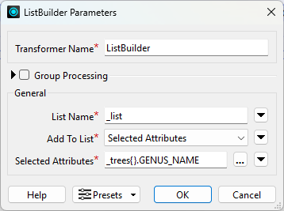
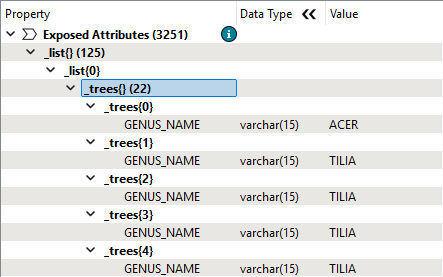
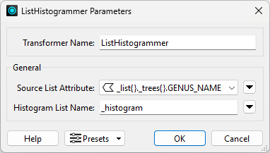
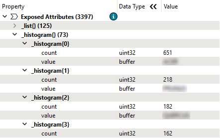
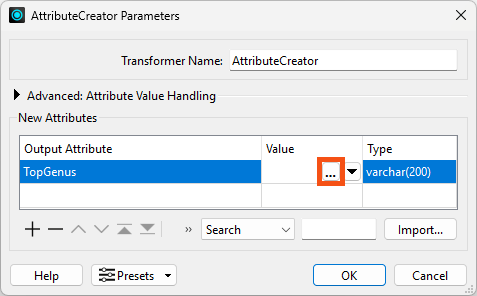
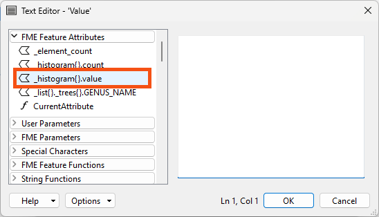
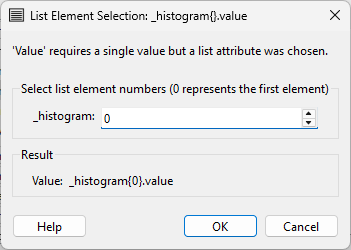
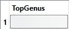

Learning Objectives
After completing this lesson, you’ll be able to:
- Manipulate lists and extract information from them using common list transformers.
- Join records and build a list from shared attributes using the ListBuilder.
- Create records from key-value pairs stored in lists.
- Conduct advanced list manipulation using the PythonCaller.
- Use the List Element Selection dialog to create new attributes using list values.
Instructions
In this lesson, you will:
- Scroll down to read the text below.
- Optional: You can view the video instead of reading the text. The video covers the text material.
- Complete the exercise by following the steps.
- Complete the Quiz toward the bottom of the page.
- Optional: Let us know if you found this lesson relevant to your role by filling out the survey at the bottom of the page.
- Click 'Next' to mark the lesson complete.
Resources
Exercise
Jennifer's workspace creates a list of every tree in each park. She's added a TestFilter to filter park polygons that have trees.
She'd like to update the workspace to do the following:
- Filter the data to examine parks with trees.
- Find the most common genus among all park trees.
- Store the name of that genus in a new attribute.
1) Open Starting Workspace and Run It
- Start FME Workbench (2026.1 or later).
- Open the starting workspace (C:\FMEData\Workspaces\AdvancedDataTransformation\manipulate-lists-using-transformers.fmw).
- Run the workspace with caching enabled.
2) Create a Single List Using a ListBuilder
To get the most common genus, we need to combine the separate lists for each park record into a single list. We can do that using an ListBuilder transformer.
- Add a ListBuilder connected to the TestFilter's Trees output port.
- Set List Name to _list and add just
_trees{}.GENUS_NAME to the list.

- Click OK.
- Run the workspace.
- Inspect the ListBuilder's single output record.
- In the Record Information window, find the new
_list attribute with 125 elements.
- Each element stores the
_trees list for each park, recording the genus of each tree.
- You could normally use an Aggregator here instead, using Generate List and adding
_trees{}.GENUS_NAME to the list. The result would be the same as using the ListBuilder. However, there is a bug in FME 2026.1 that results in excess nulls in Aggregator lists. This bug is fixed in 2026.2.

3) Count Genus Names Using a ListHistogrammer
- Add a ListHistogrammer connected to the ListBuilder's Output port.
- This transformer lets us count the times each genus appears in this new list.
- Configure the ListHistogrammer to use
_list{}.trees{}.GENUS_NAME as the Source List Attribute.
- This configuration means the transformer will count the values of all
GENUS_NAME attributes in the list and store the result in a new list attribute called _histogram.

- Click OK.
- Run the workspace
- Inspect the ListHistogrammer's Output cache.
- In the Record Information Window, find the new
_histogram list attribute.
- Make sure you collapse the large
_list attribute still present on the record; _histogram will be below it in the Record Information Window.
- Expand the
_histogram attribute to see the histogram's results.
- The most common value is stored as element 0 in the list, with the count attribute reflecting the number of times it appears in the list and the attribute value showing the genus name.
- Take note of the top
GENUS_NAME; you will need it for the quiz.

4) Store the Result Using an AttributeCreator
Now we have found the most common genus, we'd like to store its name in an attribute.
- Add an AttributeCreator attached to the ListHistogrammer's Output port.
- Add a new Output Attribute called
TopGenus.
- Click the ellipsis button to open the Text Editor.

- Double-click
_histogram{}.value on the left under FME Feature Attributes to insert it.

- Observe a behavior unique to list attributes. Instead of inserting
_histogram{}.value in the Text Editor, the List Element Selection dialog appears.

- Leave the value of 0 because we want to extract the value of the first element in the list, which is the most common genus.
- Click OK.
Jennifer runs the workspace and inspects the AttributeCreator's Output cache. The new attribute stores the name of the genus:

Challenges
Challenge #1: Find the most and least common genus for trees within parks.
Challenge #1 Answer: Open after attempting the challenge.
- Open the complete workspace (C:\FMEData\Workspaces\AdvancedDataTransformation\manipulate-lists-using-transformers-complete.fmw) to see the solution.
Challenge #2: How do you think the process outlined here will handle ties?
Challenge #2 Answer: Open after attempting the challenge.
- The short answer: it doesn't! Open the last few elements of the
_histogram list.
- You will find there are many ties for last place, cases where there is only one tree of that genus. If you extract the very last element, you do get one of the least common genuses, but it's tied for last place.
- The result is a bit arbitrary, as it's just the last occurence the ListHistogrammer encounters.
Challenge #3: Don't hard-code the list element in the AttributeCreator. How can you use transformers to extract the index of the most and least common genus instead?
Challenge #3 Answer: Open after attempting the challenge.
- To extract a single value from a list attribute, you must specify the index to use. Referring to all the values in a list in the Text or Arithmetic Editor or a transformer parameter is impossible. You need to use a transformer that accepts list values as input to do that.
- If you don't want to hard-code the element number, use the Text Editor to specify an attribute instead of a number.
- For example, you can use that method to find the least common genus. Use a ListElementCounter to count all the elements in
_histogram, then supply the _element_count result as the index to retrieve the last value:
@Value(_histogram{@sub(@Value(_element_count),1)}.value)
- Note that you must subtract 1 from
_element_count to get the last entry in the list since _element_count starts at 1 and list indexes start at 0.
Challenge #4: Is there an easier way to get this answer from the starting data? Do you have to use lists?
Challenge #4 Answer: Open after attempting the challenge.
Yes, in this case, you can actually get the answer without using lists!
Here are the steps for a simple way to do it:
- Use a Clipper instead of PointOnAreaOverlayer to filter the trees to only tree points within parks.
- Use a StatisticsCalculator grouped by
GENUS_NAME to get the Total Count for GENUS_NAME (or any attribute).
- Use a Sorter to sort
GENUS_NAME.total_count Numeric Descending.
- The first feature reports the most common genus, etc.
What's the lesson? Lists are powerful, but they are not always necessary! If you can design it, a non-list-based approach is often simpler.
Learn More
You can use many other list transformers you could use to continue to process and analyze the tree list. Here are some examples:
| Operation |
Transformer |
| Count the number of trees in each park |
ListElementCounter |
| Find the maximum tree diameter |
ListSorter & ListIndexer |
| Find the count of each species |
ListHistogrammer |
| Create a list of species |
ListConcatentaor |
| Find which parks have an Oak tree |
ListSearcher |
| Create a table of park trees with the park name |
ListExploder |
| Find the average tree height in a park |
ListSummer |
| Find the minimum/maximum of tree diameters |
ListRangeExtractor |
Leave Us Feedback on This Lesson